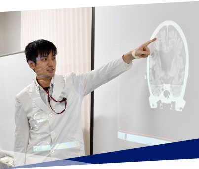
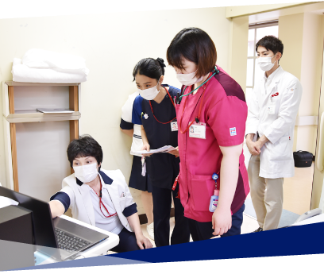

専門医研修プログラムとは
産業医科大学病院は678床を有する大学病院で、地域の中核病院であることはもちろん、勤労者の健康管理、職業性疾病、作業関連疾患などの産業医学関連の研究と診療を行い、地域医療に加え、産業医学分野へ貢献してきました。神経・精神科ではメンタルヘルス対策の取り組みや職域における精神疾患に対する研究と診療、薬理学的な臨床研究を積極的に行っています。神経・精神科病棟は40床（うち保護室2床、個室5床）を有する閉鎖病棟で、年間1000名以上の新患患者が受診し、統合失調症、気分障害、神経症性障害をはじめとし、思春期症例、認知症やリエゾン・コンサルテーション精神医学症例を要する身体合併症症例まであらゆるケースに対応しています。専攻医は入院患者の主治医となり、指導医や上級医の指導を受けながら、幅広い症例を経験することができます。これらの機会を通して、最新の知見も踏まえながら診断や精神療法から薬物療法、電気痙攣療法などの治療についての議論と指導が行われ、精神疾患全般の基礎的な知識を身につけることができます。さらに、専攻医が希望する場合には、産業医学講座の受講や過量服薬や自殺企図の初期対応を学ぶことができる救急科での研修、緩和ケア医療における精神科医の役割を実践的に学ぶことができる緩和ケアセンターでの研修、他の診療科と連携した認知症の診断と対応およびかかりつけ医や包括支援センターなどとの連携を学ぶことができる認知症センターでの研修も選択することも可能です。科学的視点を養成し学会発表や論文作成に関しても積極的に指導を行っています。

精神保健指定医の研修プログラムの概要
精神保健指定医の取得には、医師として5年以上かつ精神科医として3年以上の実務経験が必要とされています。当科では最短取得（精神科医4年目）を目指し、診療およびレポートの作成を指導しています。レポート作成にあたっては、受験する医師１人につき3名の指導医が指導を行うため、きめ細やかな指導を受けることができます。全国での合格率は60％と言われる中、近年の当大学での合格率は100％です。

専門医の研修連携施設
研修連携病院は14施設を有しており、専攻医個々のニーズに合わせた選択が可能です。九州労災病院は総合病院精神科であり身体合併症症例やリエゾン症例のマネジメント、身体科医師や看護師、ソーシャルワーカーとのチーム連携を十分に学ぶことができます。
北九州古賀病院、小倉蒲生病院、直方中村病院は非常に多くの認知症症例を有し、認知症疾患医療センターを有している施設もあり、高齢化に伴い増加している認知症領域の臨床経験を積むことが可能です。大川病院、小嶺江藤病院、住田病院、堤病院、日明病院、南ヶ丘病院、門司松ヶ江病院、新門司病院は単科の精神科病院で、行動制限症例や非自発入院例の経験や幅広い症例を数多く経験することで、身についた知識を実践し精神科臨床力を経験的に向上させることができます。
福間病院、八幡厚生病院は急性期の集中的な治療を必要とする精3神疾患の患者を対象とした全国でも数少ない高規格の病棟であるスーパー救急病棟を有しており、精神科救急医療を十分に経験することができる。このようなプログラムを通して、専攻医は日々進歩する脳科学の知識と豊かな人間性を有する精神科医としての基礎を育む研修を目指す。